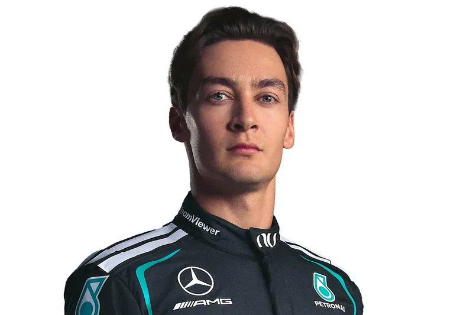
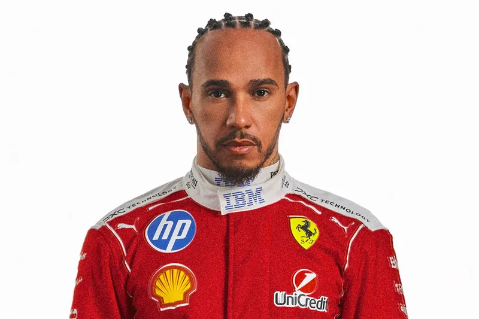
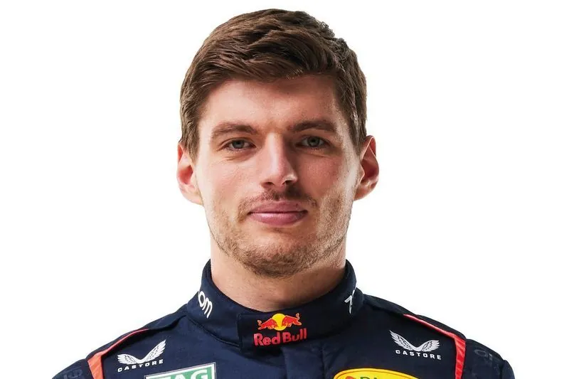

Kimi Antonelli
#12 · Mercedes — Italiano, líder del campeonato en su segunda temporada.
#12 · Mercedes — Italiano, líder del campeonato en su segunda temporada.

#63 · Mercedes — Británico, segundo en el campeonato.

#44 · Ferrari — Británico, siete veces campeón del mundo.

#4 · McLaren — Británico, ganador del último GP en Zandvoort.

#16 · Ferrari — Monegasco, quinto en el campeonato.

#1 · Red Bull Racing — Neerlandés, tricampeón, sexto esta temporada.
Nacionalidad: Italia
Escudería: Mercedes
Puntos 2026: 242
Victorias: 6
Poles: 6
Podios: 10Kimi Antonelli debutó en la Fórmula 1 en 2025 de la mano de Mercedes tras arrasar en las categorías junior, y en su segunda temporada ya lidera el Campeonato de Pilotos con seis victorias y seis poles, en busca de su primer título mundial.
Próxima carrera: Gran Premio de Italia, Autodromo Nazionale Monza.